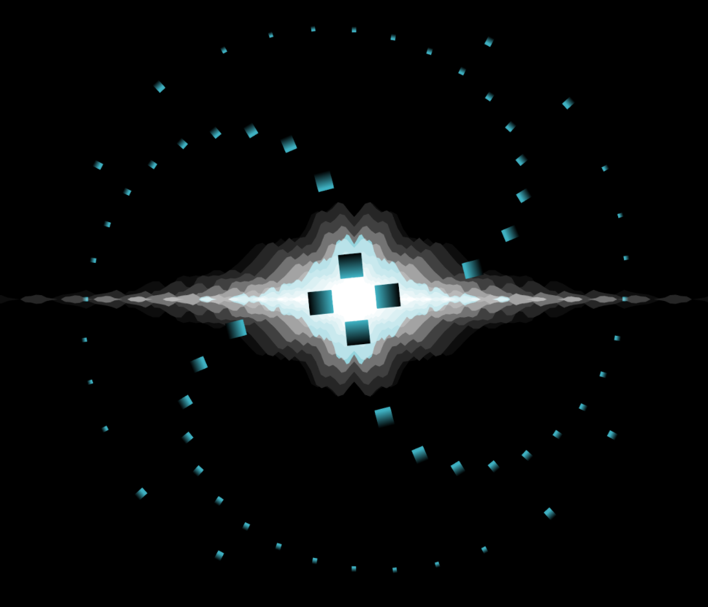
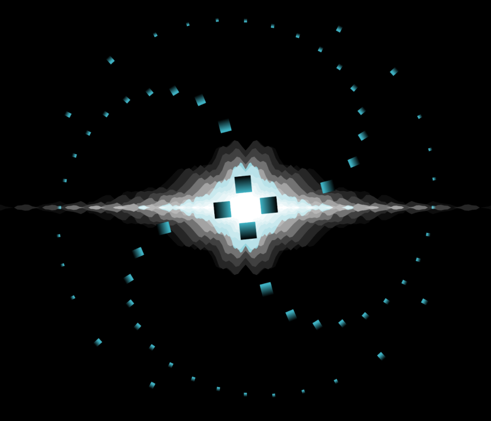

Trenavix's Resources
Apps & Tools:
A 3D Audio Visualiser written in JS/WebGL
NOTE: iOS does not support WebAudio API at this moment.
Source Code

NOTE: iOS does not support WebAudio API at this moment.
Source Code

SM64Paint
BK2BT